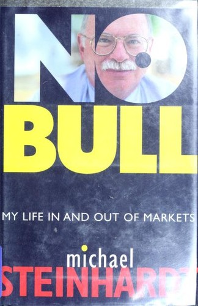

迈克尔·斯坦哈特（Michael Steinhardt）1940年12月出生于纽约布鲁克林本森赫斯特区。父亲索尔·斯坦哈特（Sol Steinhardt）绰号"红人"，是纽约头号珠宝销赃人，与黑帮人物迈耶·兰斯基（Meyer Lansky）等人过从甚密，1958年因买卖赃物被判两项重罪、各五到十年徒刑，先后关押在辛辛监狱和丹尼莫拉重刑监狱。十三岁犹太成人礼上，索尔送给儿子价值约五千美元的两百股宾迪克西水泥（Penn Dixie Cement）与哥伦比亚燃气（Columbia Gas System）股票，此后又多次塞给他装着一万美元百元钞票的信封让他去炒股——父亲后来成了他第一个"客户"。斯坦哈特十九岁从宾夕法尼亚大学沃顿商学院毕业，先在Loeb, Rhoades & Co.做分析师，跟踪企业集团股票，1967年与威廉·萨洛蒙（William Salomon）、杰克·纳什（Jack Nash）合伙创立斯坦哈特-法恩-伯科维茨基金，即后来的Steinhardt Partners。
基金成立首年上涨84%；1969至1970年标普500指数连续两年下跌约9%，同期业内28家最大对冲基金合计亏掉三分之二资本，他却靠真正的多空对冲保住本金并在下跌中获利，由此得名"区块交易之王"。他把自己的选股方法称为"变异认知"（variant perception）——持有一个经过充分论证、且明显不同于市场共识的判断，同时准确把握市场对某只股票的真实预期，书中191页专门讨论了这一方法，后来被多位基金经理反复引用。从1967年创立到1995年退休，基金年化回报率达24.5%，一美元变成481美元。1991年他与所罗门兄弟公司一起卷入美国国债市场操纵调查，以7000万美元和解，个人承担其中75%。1994年他重仓押注欧洲债券的汇率趋同交易（涉及西班牙博诺、意大利BTP、法国OAT），当年基金亏损31%，是他从业以来最差的一年；书中他这样解释危机："突然间，那些原本互不相关的事件都关联在了一起"（"Suddenly, events that were not ordinarily connected were."）。次年基金反弹25%，他随即在1995年宣布退休、清盘基金。
《短线大师》不完全是一本生意经。斯坦哈特用相当篇幅回顾与父亲的关系——直到索尔1999年去世，他才第一次公开承认父亲的罪犯身份，并写道自己此前"完全相信父亲是无辜的"。他还观察到，自己交易时的"投机快感"与父亲的赌瘾冲动有相似之处，并把写作此书形容为一场"宣泄"（catharsis）。《财富管理》（Wealth Management）杂志书评人大卫·杰拉乔蒂（David Geracioti）评价此书"读来颇为流畅、饶有兴味"（eminently readable and interesting），但也直言"他的文笔算不上文学"（His prose can't be called literature）。评价并不总是正面：投资博客Credit Bubble Stocks给此书打了五分之二的低分，称其为"近期读过最差的投资类书籍之一"，认为除191页那段关于变异认知的论述外，其余内容相当轻飘。
斯坦哈特退休后并未真正离开金融业：2004年他出任WisdomTree Investments董事长，到2018年这家指数基金公司管理规模已增至约410亿美元。他与查尔斯·布朗夫曼（Charles Bronfman）在1999年共同发起"生日权利"（Birthright Israel）项目，向数十万犹太青年提供免费的以色列寻根之旅，个人对犹太事业的捐赠累计超过1.25亿美元。英文精装初版由Wiley在2001年出版，后有平装再版；简体中文版沿用《短线大师：斯坦哈特回忆录》这一书名。这本书对交易者和研究者最有用的部分，未必是那些辉煌年份，而是1994年那次公开、具体的失败——一个管理过40亿美元、创造过28年年化24.5%纪录的人，如何描述相关性突然改变、杠杆放大错误，以及自己判断力彻底失灵的完整过程。